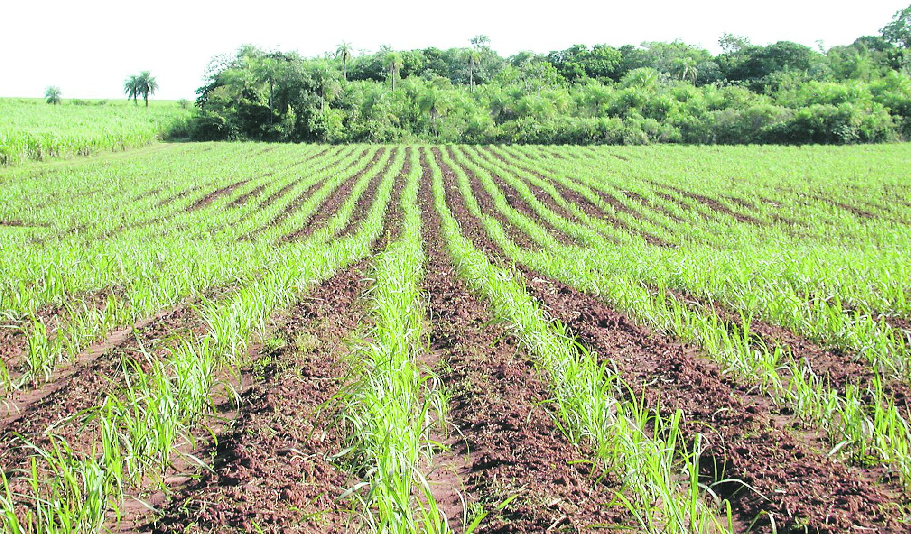
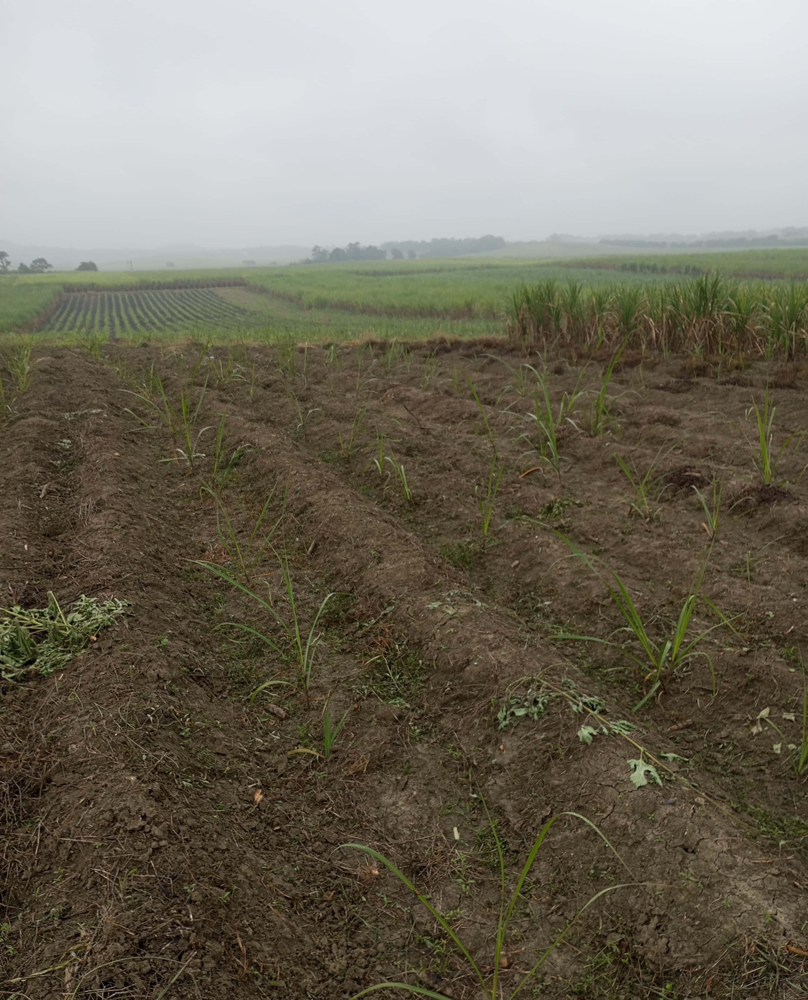
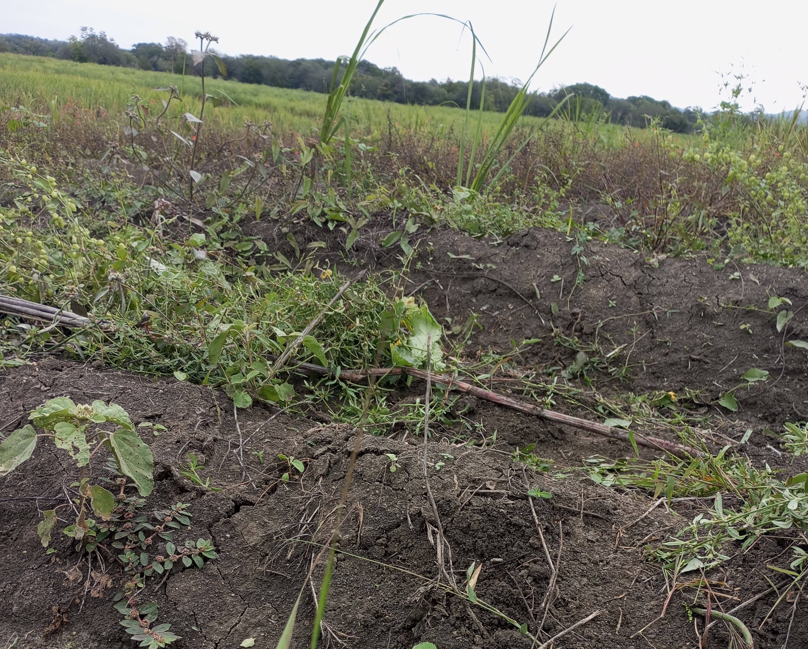

La producción de caña de azúcar en nuestras comunidades tiene raíces profundas, heredadas de generación en generación. Los conocimientos sobre el cultivo han sido transmitidos por 25 años, formando parte de la identidad cultural.

At´aj T´ojom T´inom la palabra que esta visualizando tiene una gran importancia, es lo que se denomina como una casa, siguiendo de ahi quiere decir trabajo, y por ultimo el siginicado de piloncillo.

Es lo que mantiene vivo esta tradición de dar los productos en muy buen sabor, combinando con varios productos como el pan,cafe, etc por eso es importante preservarlo y que nunca de deje de hacer.